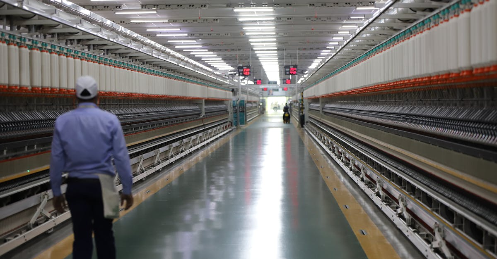

L'énigme DeepSeek V4 : Un retard aux répercussions stratégiques
L'actualité technologique est rarement dénuée de rebondissements, mais l'annonce récente concernant DeepSeek V4 a pris de court bon nombre d'observateurs. Le très attendu modèle d'IA de DeepSeek, positionné comme un concurrent sérieux sur l'échiquier mondial de l'intelligence artificielle, voit sa sortie retardée. Ce n'est pas un simple accroc dans un calendrier de développement, mais plutôt, selon Yuyuantantian, un compte de média social affilié à la chaîne de télévision d'État chinoise CCTV, le symptôme d'un pivot stratégique majeur. La raison invoquée ? Une intégration plus profonde avec l'écosystème des puces domestiques chinoises.
👉 À lire : Mistral AI: L'IA Française Conquiert le Monde des Entreprises et Redéfinit l'Investissement
Cette information, révélée par Bloomberg Technology, n'est pas anodine. Elle suggère que la Chine, loin de simplement chercher l'autonomie, est en train de remodeler activement sa stratégie technologique pour réduire sa dépendance vis-à-vis des technologies étrangères, notamment américaines. Pour les marchés financiers, et en particulier pour l'univers volatil du crypto-trading, une telle évolution dans le paysage de l'IA est un facteur à ne pas sous-estimer. La performance des modèles d'IA, leur disponibilité et leur sécurité sont intrinsèquement liées aux infrastructures qui les supportent. Un changement de cette ampleur dans les fondations mêmes de l'IA pourrait avoir des implications en cascade, affectant tout, de la vitesse d'innovation aux coûts de développement, et par extension, la sophistication des agents IA qui analysent et exécutent des transactions 24h/24 sur les marchés cryptos.
👉 À lire : Singapour face à Mythos AI : La cybersécurité bancaire sous tension
La souveraineté technologique chinoise : Un impératif géopolitique
Le virage de DeepSeek vers les puces chinoises n'est pas un événement isolé, mais s'inscrit dans une tendance plus large et plus profonde : la quête de la Chine pour la souveraineté technologique. Depuis des années, les tensions géopolitiques, notamment les restrictions imposées par les États-Unis sur l'exportation de semi-conducteurs et d'équipements de fabrication de puces, ont mis en lumière la vulnérabilité de l'industrie technologique chinoise. Des entreprises comme Huawei ont été les premières à en faire les frais, ce qui a catalysé une volonté farouche de développer des alternatives nationales.
« Ce n'est plus seulement une question d'efficacité ou de coût, c'est une question de sécurité nationale et de résilience économique, » analyse un expert fictif en géopolitique technologique. « La Chine investit massivement dans ses propres capacités de fabrication de puces, de la conception à la production. Le retard de DeepSeek V4, bien que potentiellement coûteux à court terme, est un signal fort que le pays est prêt à consentir des sacrifices pour maîtriser l'intégralité de sa chaîne d'approvisionnement en IA. » Cette stratégie, bien que semée d'embûches techniques et économiques, vise à créer un écosystème technologique autonome, capable de fonctionner indépendamment des pressions extérieures. Les implications pour l'innovation globale sont considérables : verrons-nous l'émergence d'architectures d'IA fondamentalement différentes, optimisées pour des puces chinoises spécifiques ? La réponse pourrait bien redessiner la carte mondiale de l'intelligence artificielle.
Impact sur l'écosystème IA mondial et les marchés financiers
Ce glissement stratégique de DeepSeek, loin d'être un simple fait divers, est un indicateur précurseur des changements structurels à venir dans l'écosystème global de l'intelligence artificielle. Si la Chine parvient à développer des puces compétitives pour l'IA, cela pourrait entraîner une bifurcation des standards et des technologies. On pourrait assister à l'émergence de deux écosystèmes IA distincts : l'un centré sur les technologies occidentales, l'autre sur les innovations chinoises. Une telle division aurait des conséquences profondes :
- Fragmentation technologique : Les développeurs pourraient être contraints de choisir entre des plateformes optimisées pour des puces américaines ou chinoises, compliquant l'interopérabilité et la collaboration internationale.
- Accélération de l'innovation locale : La pression pour innover pourrait stimuler la créativité en Chine, menant à des avancées uniques en matière de hardware et de software IA.
- Volatilité des marchés : Les tensions géopolitiques autour de la technologie ont déjà prouvé leur capacité à injecter de l'incertitude sur les marchés mondiaux. Les investisseurs en cryptos, en particulier, sont sensibles à ces vagues macroéconomiques.
« L'avenir de l'IA ne sera probablement pas monolithique. Nous pourrions nous diriger vers un monde où l'innovation est plus décentralisée, avec des hubs distincts développant des technologies de pointe en parallèle, » déclare Dr. Li Wei, chercheuse en IA à l'Université de Pékin (fictive). « Cette compétition pourrait être un moteur puissant, mais aussi une source de frictions. »
Pour les acteurs du trading automatisé, cette fragmentation signifie une complexité accrue dans l'évaluation des performances et de la fiabilité des modèles d'IA. La capacité d'un agent IA à traiter l'information rapidement et avec précision dépend directement de l'infrastructure sous-jacente. Si cette infrastructure se diversifie, les algorithmes devront être encore plus robustes et adaptables.

L'IA au service du crypto-trading : Anticiper un futur fragmenté
Dans ce contexte de profondes mutations technologiques et géopolitiques, comment les agents IA dédiés au crypto-trading peuvent-ils tirer leur épingle du jeu ? La réponse réside dans l'adaptabilité et la sophistication. Les modèles d'IA qui analysent les marchés cryptos 24h/24, 7j/7, sont déjà confrontés à une volatilité extrême et à une masse de données sans précédent. L'introduction d'une possible fragmentation des architectures d'IA et des chaînes d'approvisionnement en puces ajoute une couche de complexité supplémentaire.
- Résilience des algorithmes : Les agents IA devront être conçus pour être résilients face à d'éventuels retards ou perturbations dans l'accès à certaines technologies de pointe. Une diversification des sources de données et des modèles d'apprentissage pourrait devenir cruciale.
- Analyse des signaux faibles : La capacité d'une IA à détecter les signaux faibles issus des tensions géopolitiques et de leurs impacts sur les marchés technologiques sera un avantage concurrentiel majeur. Une IA capable d'intégrer des données non-financières, comme les annonces gouvernementales ou les rapports sur les chaînes d'approvisionnement, aura une vision plus complète.
- Optimisation continue : L'environnement changeant exigera une optimisation et une mise à jour constantes des modèles d'IA. Ceux qui pourront s'adapter rapidement aux nouvelles architectures de puces ou aux standards logiciels émergents seront les plus performants.
L'avenir de l'IA est intrinsèquement lié à l'accès aux semi-conducteurs de pointe. Pour les investisseurs qui misent sur l'automatisation et l'intelligence artificielle pour naviguer les marchés cryptos, comprendre ces dynamiques est essentiel. Un agent IA qui peut non seulement analyser les graphiques et les volumes, mais aussi interpréter les implications d'un virage stratégique comme celui de DeepSeek, offre une valeur inestimable.
Conclusion : L'ère de l'IA, entre convergence et divergence
Le retard de DeepSeek V4 n'est pas qu'une simple note de bas de page dans l'histoire de l'IA ; c'est un chapitre naissant qui souligne la détermination de la Chine à forger sa propre voie technologique. Cette décision, motivée par un impératif de souveraineté, promet de remodeler non seulement l'industrie des semi-conducteurs, mais aussi l'ensemble de l'écosystème de l'intelligence artificielle à l'échelle mondiale. Les implications sont vastes, allant de la fragmentation potentielle des standards technologiques à l'accélération de l'innovation dans des pôles distincts.
Pour les investisseurs et les traders de cryptomonnaies, l'importance de cette évolution ne doit pas être sous-estimée. Dans un monde où les marchés sont de plus en plus influencés par des facteurs macroéconomiques et géopolitiques complexes, la capacité à anticiper et à réagir rapidement est primordiale. C'est précisément là que des outils sophistiqués, comme un agent IA qui trade les cryptos pour vous 24h/24, trouvent toute leur pertinence. Ces systèmes doivent être suffisamment robustes pour intégrer ces dynamiques, s'adapter à des environnements technologiques changeants et continuer à générer des analyses pertinentes, assurant ainsi une longueur d'avance dans un paysage financier et technologique en constante redéfinition.